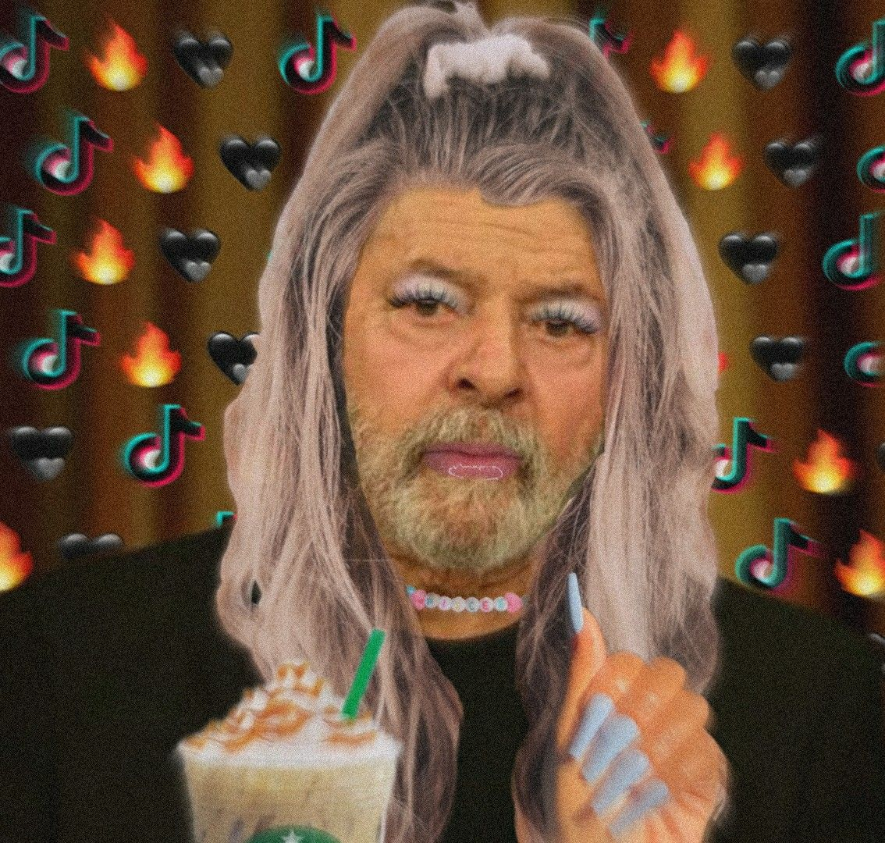
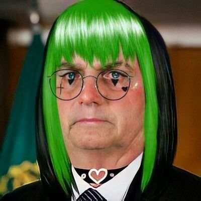

Eleições 2014
Veja a cobertura completa da campanha
Datafolha
Dilma sobe, Marina fica estável e Aécio cai
Mais Datafolha
Alckmin mantém favoritismo em SP, mas vantagem sobre Skaf cai
Pimentel tem 32% e Pimenta aparece com 24%
Garotinho tem 28%, Pezão, 23% e Crivella, 18% no Rio
Política
Lula indica a possibilidade de ser o candidato do PT nas eleições de 2018
Pezão: Discurso de Garotinho anima traficantes
Por que Marina tergiversa tanto? Porque está na Biblia
Campanha
Campanha contra cavaletes de candidatos ganha as redes sociais

Poder online
PT vê em Lula chave para evitar dissidências na direção

Poder online
Recuos freiam subida de Marina, PT vê situação desesperadora em SP